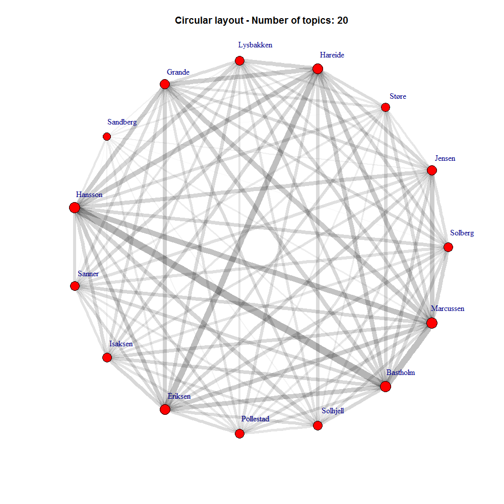
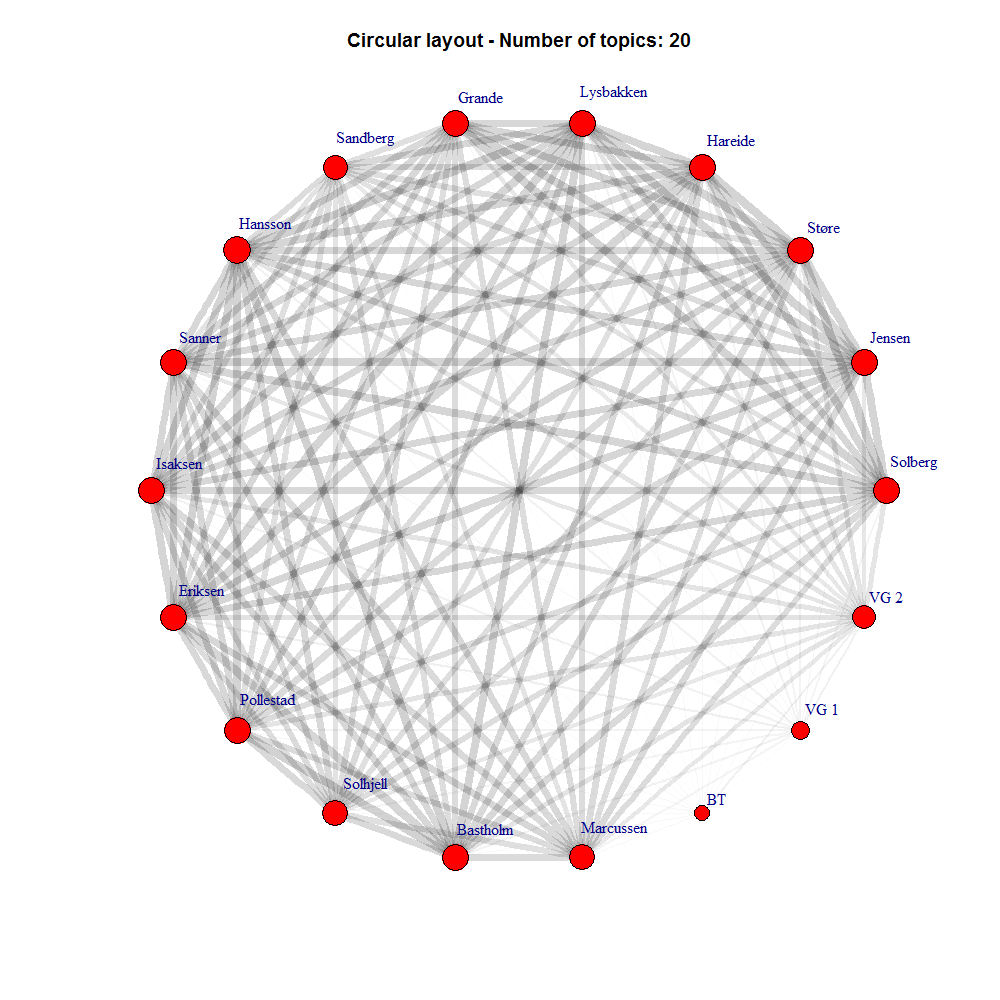
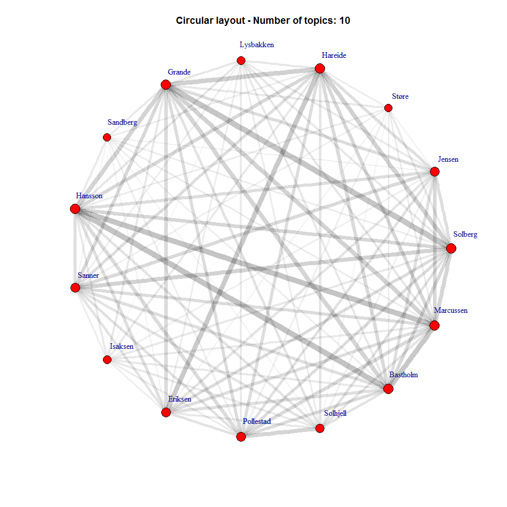

Relasjoner
Hvor ofte nevner politikerne hverandre eller seg selv.
Politikerlikhet
Hvor stor likhet er det mellom hva de snakker om
Politiker- og avislikhet
Hvor stor likhet er det mellom hva aviser og politikere snakker om
Politikerliket med ulikt antall topics
Hvor stor likhet er det mellom politikere snakker om
